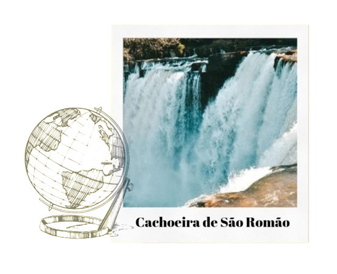

Conheça Carolina!

Se você está em busca de um refúgio longe do agito da cidade e deseja se
reconectar com a natureza, Carolina é o destino ideal para você. Prepare-se para se maravilhar
com a
beleza das cachoeiras, relaxar ao som das águas cristalinas e criar memórias inesquecíveis em um
dos
lugares mais especiais do Maranhão. Uma visita a essa cidade encantadora certamente ficará
gravada
em seu coração para sempre!
Uma dica valiosa para quem for visitar Carolina, no Maranhão, é estar preparado
para as trilhas até as cachoeiras. Recomenda-se usar calçados confortáveis e apropriados para
caminhadas, levar repelente de insetos, protetor solar, água e lanches leves para garantir um
passeio tranquilo e agradável. Além disso, é sempre bom respeitar a natureza local, não deixando
lixo nas trilhas e respeitando as orientações dos guias locais.